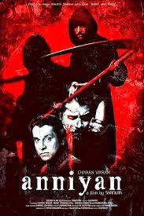
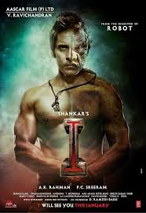

SPOTSTAR - VIKRAM
Chiyaan Vikram, born as Kennedy John Victor on April 17, 1966, is a renowned Indian actor best known for his work in Tamil cinema. He began his acting career in the early 1990s and gained recognition with the film Sethu, which marked a major turning point in his career. Known for his dedication and transformative performances, Vikram has portrayed a wide variety of roles, including a mentally challenged man in Pithamagan, a man with multiple personality disorder in Anniyan, and a bodybuilder-turned-hunchback in I. His commitment to physically and emotionally demanding roles has earned him critical acclaim and a strong fan base. Vikram has received several prestigious awards, including the National Film Award for Best Actor and multiple Filmfare Awards South. Apart from acting, he is also a playback singer and philanthropist. He supports several social causes and is known for his involvement in charity work, particularly in education and healthcare. Vikram is admired not only for his acting talent but also for his humility and dedication to cinema. With a career spanning over three decades, he remains one of the most respected and versatile actors in the Indian film industry.
POPULAR FILMS


